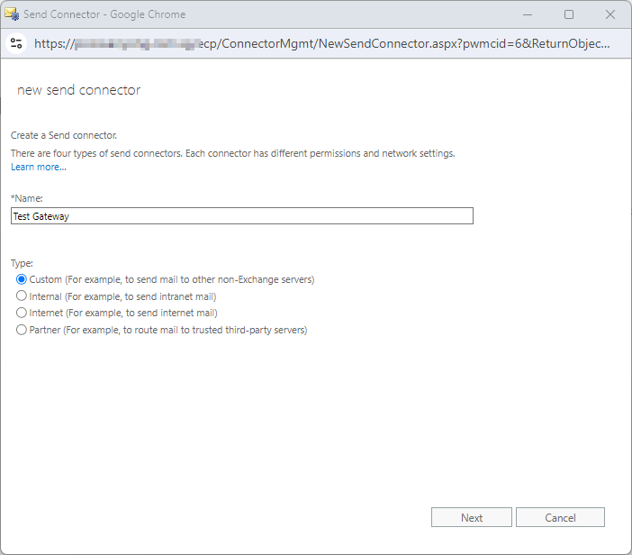
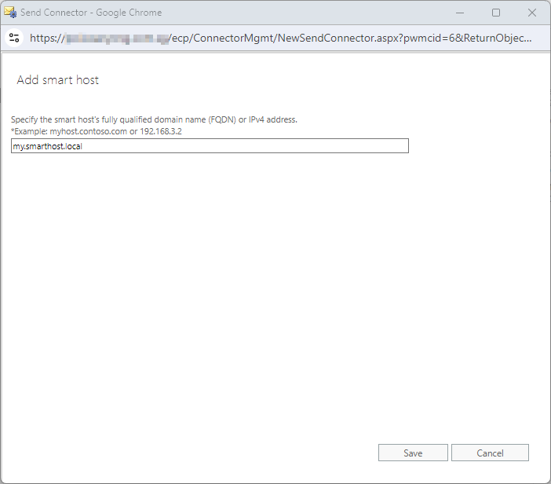
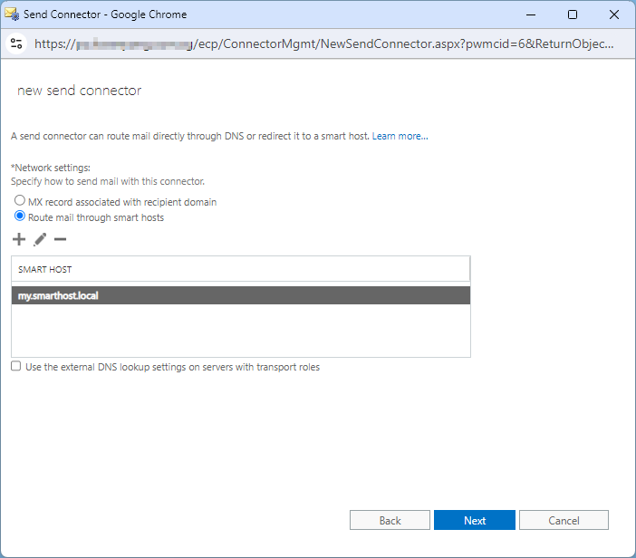
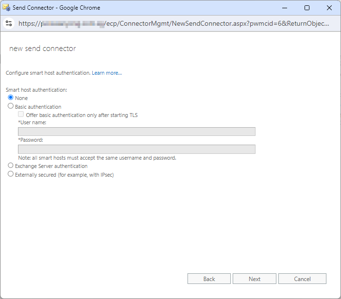
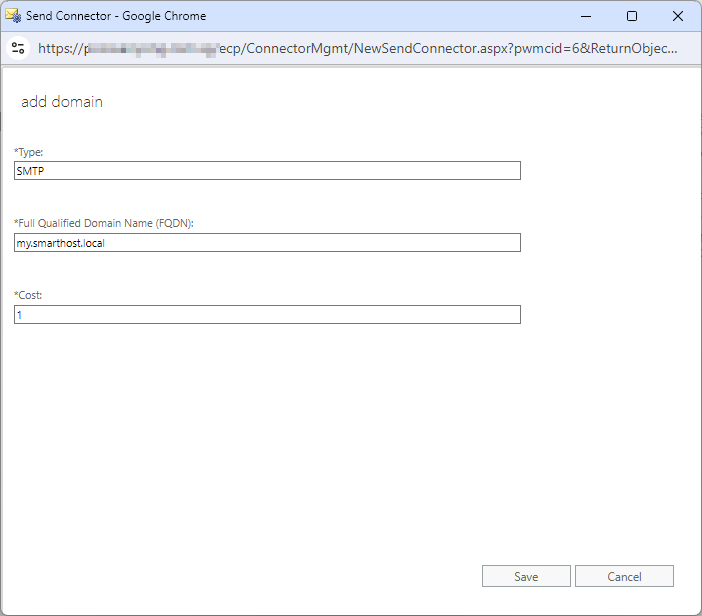
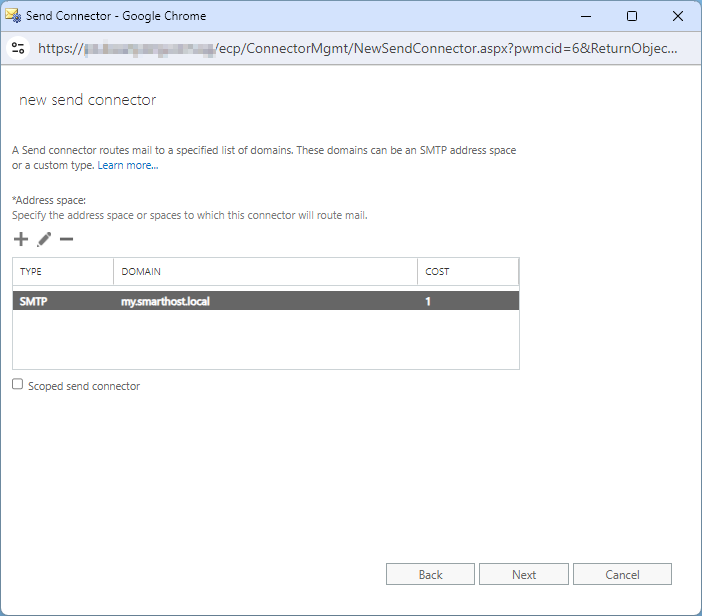
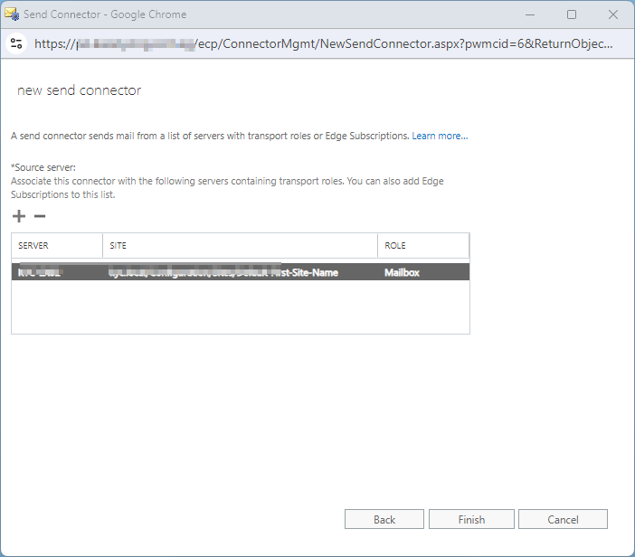
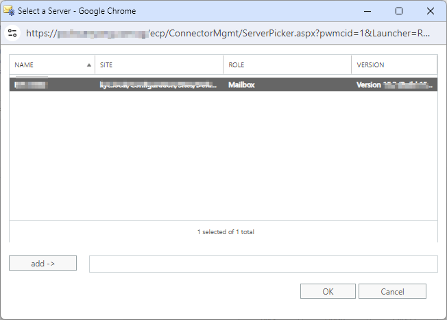

Configuring the mail server for email archiving with piler enterprise edition#
Revision #2
Publication date: Aug 23, 2024
Configure the mail server#
To start archiving emails you have to configure your mail servers to copy each and every single email they receive to piler via SMTP.
The configuration process depends on the used mail server. We’ll use archive@archive.yourdomain.com address as an example where to send the emails. Be sure to use your own archive’s domain name!
For multi-tenant installations the local part must match the customer (=tenant) ID, eg. if the customer id is “customer1”, then the address to forward emails is customer1@archive.yourdomain.com.
Postfix#
Add the following to main.cf then issue the postfix reload command:
always_bcc = archive@archive.yourdomain.com
Axigen#
Open the Axigen web admin interface. Go to “SECURITY & FILTERING”, then click on “Acceptance & Routing”, finally click on “ADVANCED SETTINGS”.
Click on “ADD ACCEPTANCE / ROUTING RULE”, and fill the rule name, the conditions and the actions fields, see the example below. Then click on the “SAVE CONFIGURATION” button.
Office 365#
Configure networking, and make sure that Office 365 can reach archive.yourdomain.com on port 25. This may require setting some firewall rules, etc.
Create a mailbox for NDR reports#
Login at office 365 admin portal, then go to “Users” → “Active users” menu, and create a user for receiving undeliverable journal reports, eg. ndr-reports@yourdomain.com.
Create a journaling rule#
Go to Exchange admin center, then “compliance management”, and select “journal rules”. Click right next to “Send undeliverable journal reports to:”, and specify the address you just created (ie. ndr-reports@yourdomain.com).
- Enter “archive@archive.yourdomain.com” to “Send journal reports to”
- Type “archiving” to “Name”
- Select “[Apply to all messages]” at “If the message is sent to or received from…”
- Select “All messages” at “Journal the following messages…”
- Finally click on “save”
Microsoft Exchange in general#
Basically you have to create SMTP journaling in Exchange, find the details on the different Exchange versions below.
Note that you may have to force the GUI to rewrite the Message-id header field preventing Exchange to discard the restored message as a duplicate. Edit config-site.php, and set the following:
$config['REWRITE_MESSAGE_ID'] = 1;
Exchange 2003#
- Create an SMTP Contact
- Set Use MAPI rich text format to Never
- Enable Automatic Forwarding to allow automatic forwarding
- Set Exchange rich-text format to Never use
- Open Exchange System Manager (ESM)
- Expand Administrative Groups, First Administrative Group (or appropriate group), Servers
- Expand your server name
- Expand First Storage Group (or relevant group)
- Right click on the target mailbox store, select Properties
- Check the option Archive all messages sent or received by mailboxes on this store
- Click Browse
- Select the name of the user account/mailbox that has been created as the journal mailbox
- Click OK to finish
- Restart the SMTP service
Exchange 2007#
Create SMTP contact#
- Open Active Directory Users and Computers.
- Right-click the organizational unit in which you want to create the contact, point to New, and then click Contact.
- Enter the following: First Name: Journal1, Last Name: Archive, Display Name: Journal1 Archive.
- Click OK.
- Open the Exchange Management Console on the Mailbox server.
- Expand Recipient Configuration, right-click Mail Contact, and then click New Mail Contact.
- Click Existing Contact, browse to and select the Journal1 Archive contact you just created, then click OK.
- Click Next.
- For the External Email Address field, click Edit, enter the archive email address, eg. archive@archive.yourdomain.com, then click OK.
- Click Next, then click New.
Configure Message Format Settings#
- Open your Exchange Management Console.
- Expand Recipient Configuration, then select Mail Contact.
- In the result pane, select the SMTP contact.
- In the action pane, under the SMTP contact, click Properties.
- On the General tab, from the Use MAPI rich text format list, select Never.
With this setting, journal reports are sent in MIME rather than S/TNEF.
Enable Standard Journaling#
- Open the Exchange Management Console on the Mailbox server on which you want to enable journaling.
- Expand Server Configuration, then click Mailbox.
- In the result pane, select the server for the mailbox database for which you want to enable journaling.
- In the work pane, right-click the mailbox database, then click Properties.
- On the General tab, select Journal Recipient.
- For Journal Recipient, click Browse, select the Journal1 Archive recipient, then click OK.
- Click OK
Exchange 2010#
Create SMTP Contact#
- Click Start > All Programs > Microsoft Exchange Server 2010 > Exchange Management Console
- Select the Microsoft Exchange On-Premises instance
- Select Recipient Configuration
- Below the Recipient Configuration, select Mail Contact
- In the Action pane to the right, select New Mail Contact
- In the create mail contact dialog that appears, select New Contact
- Enter "journal" for the new contact name and fill out the rest of the required information.
- Select Edit aside the new contact's external email address
- A dialog appears prompting for an external email address. Enter the address "archive@archive.yourdomain.com”
- After entering the address, click OK. After returning back to the new contact dialog, select Next
- Select new to create the New Mail Contact
- After clicking New, the New Mail Contact will be created.
- Click Finish to return to the Exchange Management Console.
Enable Standard Journaling#
- Click Organization Configuration, thereafter Mailbox
- In the Database Management tab to the right, select the database for which journaling must be enabled.
- Right click on the database and select properties
- A new window appears. Select the maintenance tab and then select Browse
- Click the Journal Recipient and then browse to the New Mail Contact created previously
- Click OK
Create a Send Connector#
- Open the Send Connector tab under Server Management->Hub Transport option
- Right-click in the empty space and select new Send Connector
- Ensure the intended use field is set to custom. Enter “Journal1” in the name field then click “Next."
- Click “Add” in the Address Space Window.
- In the address field, enter the FQDN of smtp gateway, eg. archive.yourdomain.com
- Keep the default setting to use DNS to route email to the address space and click “Next.”
- Depending on your specific case, you may select “Add” to select another Hub Transport Server
- Click “Next” once the Hub Transport Server has been added
- Verify that all of the settings are correct. Click “New” then “Finish” once it is complete.
- The Send Connector should now be listed.
Exchange 2013/2016#
Setup Journaling#
- Login to the Exchange Control Panel by opening the browser at https://exchange.yourdomain.com/ecp (where exchange.yourdomain.com is the FQDN of your Exchange server)
- From the Exchange Admin Center
- Click compliance management in left menu
- Click journal rules in top right menu
- Click the + icon
- Enter journal in the name field
- In the field that says "journal the following messages..", select "All messages"
- In Send journal reports to field, enter archive@archive.yourdomain.com
- Click Save to change changes
- Accept "Do you want this rule to apply to all future messages"
Create a Send Connector#
- Select mail flow and then send connectors
- Click + to add a new send connector
- Enter 'Piler Connector' in the Name field.
- Select Custom for the Type option
- Click Next
- Under Network settings, select Route mail to smart host
- Click + to add a new smart host
- Enter the FQDN of the archive host (e.g. archive.yourdomain.com)
- Click Save
- The new host should be listed under Smart Host in the New Send Connector Window
- Click Next
- Select None for the Smart host authentication option
- Click Next
- Click + to add a new address space
- Enter archive.yourdomain.com
- Click Save.
- The FQDN should be listed under Address in the New Send Connector Window (e.g. archive.yourdomain.com)
- Click Next
- Click + to add mail server(s)
- Select the mail server from the list and then click add. Repeat this step for any additional servers
- Click ok. The mail servers should be listed under Source in the New Send Connector Window.
- Click finish
The below images may help you creating the Send Connector. Note that the archive's hostname is "my.smarthost.local" on the screenshots. Be sure to use your own archive's hostname.








Adjust Maximum Message Size#
By default, the maximum send message size for the Connector is set to 10 MB. To change this:
- Open the Exchange Management Shell
- Enter the following command to the set maximum send message size:
Set-SendConnector "Piler Connector" -MaxMessageSize "100 MB" - Enter the following command to verify the maximum send message size is 100 MB:
Get-SendConnector "Piler Connector" fl MaxMessageSize
Disable Non Delivery Reports (optional)#
- Open the Exchange Management Shell.
- Enter the following command to disable NDRs:
- Set-RemoteDomain archive.yourdomain.com -NDREnabled $false
Kerio Connect#
See the detailed instructions at https://manuals.gfi.com/en/kerio/connect/content/server-configuration/archiving-and-backup/archiving-in-kerio-connect-1164.html for notenant piler installations (“Archiving the whole server”) as well as multi-tenant piler installations (“Archiving individual domains”).
Zimbra#
Zimbra uses postfix internally, so you may use the postfix approach: find the zimbra version of main.cf, and apply the same as for postfix.
Exim#
For no-tenant deployments, create a system wide filter, eg. /etc/exim.filter with the following content:
unseen deliver archive@archive.yourdomain.com
Then specify the filter in your exim config file (on Ubuntu create /etc/exim4/conf.d/main/30_exim4-config_system_filter), and restart exim:
system_filter = /etc/exim.filter
Also check out http://www.exim.org/exim-html-current/doc/html/spec_html/ch-some_common_configuration_settings.html
Notes for mail service providers#
This chapter applies to mail service providers, how to configure postfix to send copies of emails to the archive properly.
The problem#
if you set always_bcc = some@address, then postfix sends a copy of messages to some@address. Let’s say you host
mailboxes for both customer1.com and customer2.com. Now if customer1 sends an email to customer2, then postfix will
send a single copy only to customer2@
The solution#
Configure postfix in the following way. The below config also enables you to selectively archive emails for specific domains or mailboxes only.
/etc/postfix/main.cf:
recipient_bcc_maps = pcre:/etc/postfix/bcc_map
sender_bcc_maps = pcre:/etc/postfix/bcc_map
smtp_destination_recipient_limit = 1
/etc/posfix/bcc_map:
/(.+)@customer1\.com/ customer1@archive.yourdomain.com
/(.+)@customer2\.com/ customer2@archive.yourdomain.com
/(.+)@customer3\.com/ customer3@archive.yourdomain.com
Alternate solution if postfix and piler smtp are on the same host:
Let postfix listen on the public interface, and piler-smtp on the localhost, and apply the following setup:
myhostname = smtp-gw.aaa.fu
virtual_mailbox_domains = archive.yourdomain.com
virtual_alias_maps = pcre:/etc/postfix/bcc_map
smtp_destination_recipient_limit = 1
content_filter = smtp:[127.0.0.1]:25